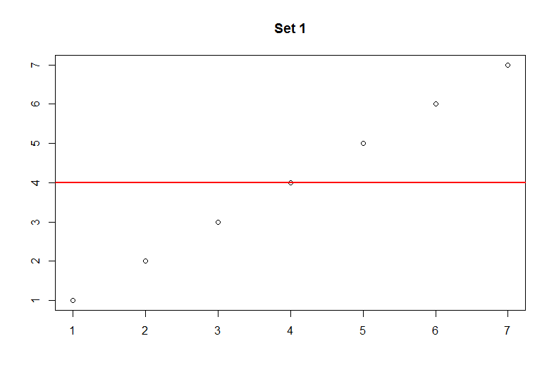
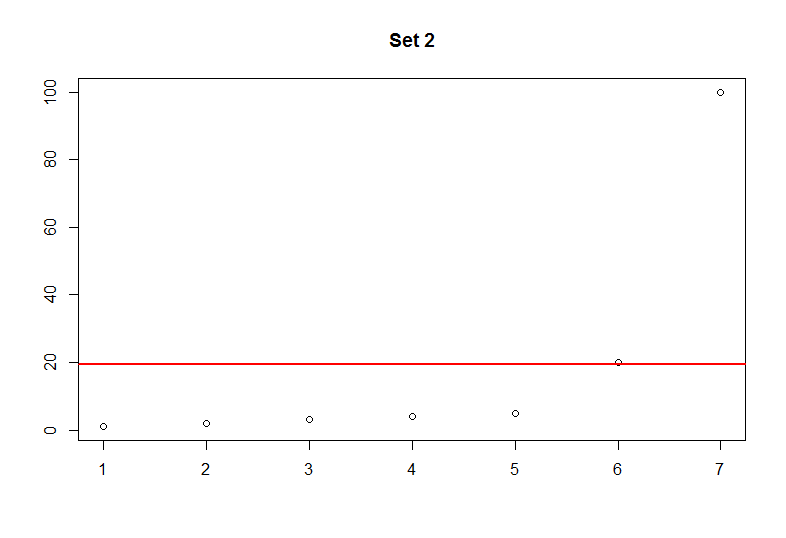

Quick Stats - Descriptive Statistics Part 1 - Mean
Introduction
Descriptive statistics is a meaningful part of statistics in which a value provides informative insight about a particular data set. Some examples of descriptive stastics include the values mean, median and mode. In this post I will provide some concepts of the mean and how to calculate this value using both R and Python. All of the examples in Python will make use of the library SciPy or Numpy.
Mean
The mean provides an average of the observed values. It can be useful to show a simple summary illustrating the average, however it can become very misleading. Keep in mind that the terms mean and average can be used interchangeably.
Let's look at the following numbers:
Set 1
1, 2, 3, 4, 5, 6, 7
Set 2
1, 2, 3, 4, 5, 20, 100
In set 1 the average is meaningful as it respresents a fair distribution of the values. However, in set 2 the average is right skewed due to the large numbers. In other words, the mean does not represent the majority of the observations. Imagine if these sets represented exam scores. This would mean that average for set 1 is 4% and average of set 2 is 21.67%. You should get the idea that only 2 students in set 2 performed well while the majority of the students performed very poorly. It is very important to know the underlying data and how the mean represents it.

The two plots above provide a better illustration of how skewed the data becomes with larger values. The red line marks the average. Keep in mind that this can happen with very small values as well.
R
In R it is very easy to calculate the mean. Below, we create a variable to hold some values and simply use the built-in mean function.
my_data = c(1,2,3,4,5)
mean(my_data)
Python
Similarly Python makes it very easy to calculate the mean. Ensure that you have the Numpy package installed to follow this snippet.
import numpy as np
my_data = [1,2,3,4,5]
np.mean(my_data)
Conclusion
The mean is a very useful but sometimes misleading descriptive statistic. It is very common to hear about averages in our daily lives, but you should know that it may not always be a good representation of the data.